Consider a rectangle PQRS. Join PR and QS. These two lines are called the diagonals of the rectangle.
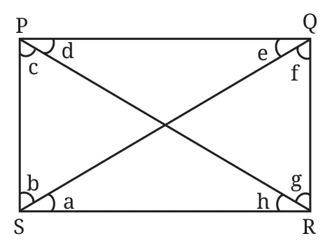
Compare the lengths of the diagonals. First predict the answer. Then construct a rectangle marking the points as shown and measure the diagonals. In rectangle PQRS, the right angles at P and R are referred to as opposite angles. The other pair of opposite angles are the right angles at Q and S. Observe that a diagonal divides each of the pair of opposite angles into two smaller angles. In the figure, the diagonal PR divides angle R into two smaller angles which we simply call g and h. The diagonal also divides angle P into c and d. Are g and h equal? Are c and d equal? First predict the answers, and then measure the angles. What do you observe? Identify pairs of angles that are equal.
Explore How should the rectangle be constructed so that the diagonal divides the opposite angles into equal parts? How will you record your observations? First, identify the parameters that need to be tracked. They are the sides of the rectangle and the 8 angles formed by the two diagonals. Are there any other measurements that you would want to keep track of?
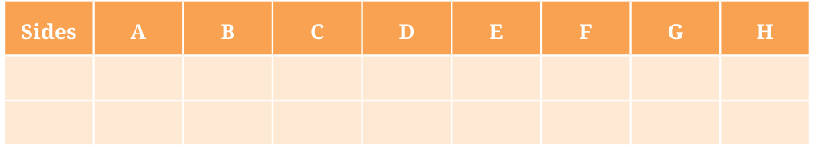
In your experimentation, did you consider the case when all four sides of the rectangle are equal? That is, did you consider the case of a square? See what happens in this special case!
What general laws did you observe with respect to the angles and sides? Try to frame and discuss them with your classmates. How can one be sure if the laws that you have observed will always be true?
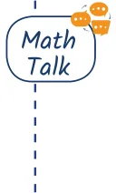
Construct
- Construct a rectangle in which one of the diagonals divides the opposite angles into \(60 ^{\circ}\) and \(30 ^{\circ}\) .
Solution Let us start with a rough diagram.
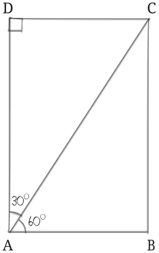
In what order should its parts be drawn? We will briefly sketch a possible order of construction.
Step 1
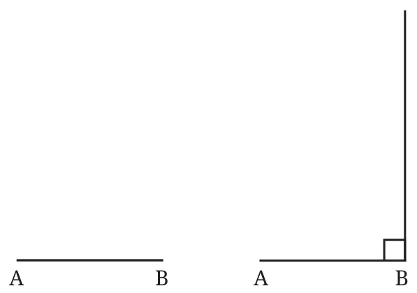
AB is drawn with an arbitrary length. What is the next point that can be located?
Step 2
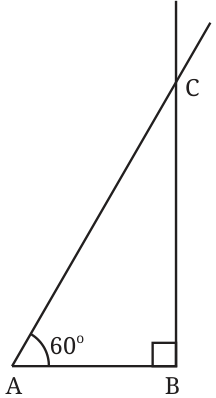
Step 3
We know the line on which D lies. Draw a line through A perpendicular to AB.
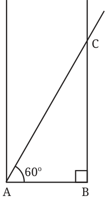
Now \(\angle A\) is divided into two angles. One measures \(60 ^{\circ}\) . Check what the other angle is. There are at least two ways of finding the point D—
- One uses the fact that all the angles of a rectangle are right angles.
- The other uses the fact that opposite sides are equal.
Step 4 Method 1
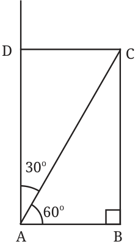
Draw a line perpendicular to BC at C to get the point D.
Method 2
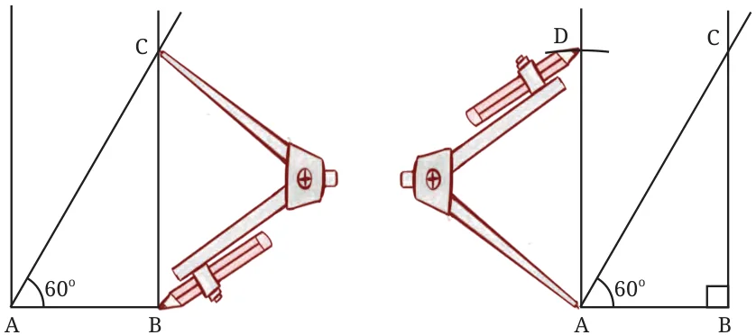
Using a compass, mark the point D such that \(AD = BC\). Join CD to get the required rectangle.
We have seen how to construct rectangles when their sides are given. But what do we do if a side and a diagonal is given?
- Construct a rectangle where one of its sides is 5 cm and the length of a diagonal is 7 cm.
Solution
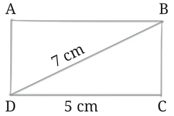
Let us draw a rough diagram. Let us decide the steps of construction. Which line can be drawn first?
Step 1
The base CD measuring length 5 cm can be easily constructed.
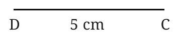
Next?
Step 2
Draw a perpendicular to line DC at the point C. Let us call this line l.
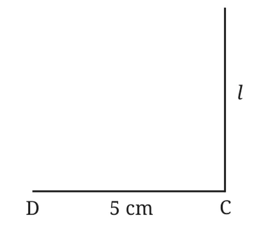
This is easy as we know that this line is perpendicular to the base. The point B should be somewhere on this line l. How do we spot it? What else do we know about the position of B? We know that it is at a distance of 7 cm from the point D.
One of the ways of marking B is by taking a ruler and trying to move it around to get a point on line l that is 7 cm from point D. However, this requires trial and error. There is another efficient method which doesn’t involve trial and error. For this, instead of trying to get that one required point of distance 7 cm from D, let us explore a way of getting all the points of distance 7 cm from D. We know what this shape is!
Step 3 Method 1
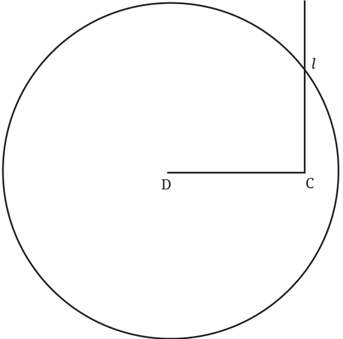
Construct a circle of radius 7 cm with point D as the centre. Can you spot the point B here? Remember that it is 7 cm away from point D and on the line l. Consider the point at which the circle and the line intersect. What is its distance from point D? If needed, check your figure. What do you observe? The point where the circle intersects the line l is the required point B.
Method 2
To locate the point B, was it necessary to draw the entire circle? We can see that only the arc near the line l is needed. So, the third step can also be done as shown in the figure below.
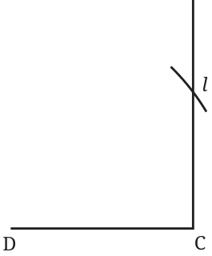
Having marked the three points of the rectangle, we only need to complete it. Recall that we were in a similar situation in the previous problem also. We saw two methods of completing the rectangle from here. We could follow any one of those methods.
Step 4
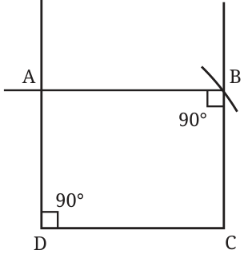
Construct perpendiculars to DC and BC passing through D and B, respectively. The point where these lines intersect is the fourth point A.
Check if ABCD is indeed a rectangle satisfying properties R1 and R2.
Construct
- Construct a rectangle in which one of the diagonals divides the opposite angles into \(50 ^{\circ}\) and \(40 ^{\circ}\) .
- Construct a rectangle in which one of the diagonals divides the opposite angles into \(45 ^{\circ}\) and \(45 ^{\circ}\) . What do you observe about the sides?
- Construct a rectangle one of whose sides is 4 cm and the diagonal is of length 8 cm.
- Construct a rectangle one of whose sides is 3 cm and the diagonal is of length 7 cm.
8.6 Points Equidistant from Two Given Points
Construct
House
Recreate this figure. Note that all the lines forming the border of the house are of length 5 cm.
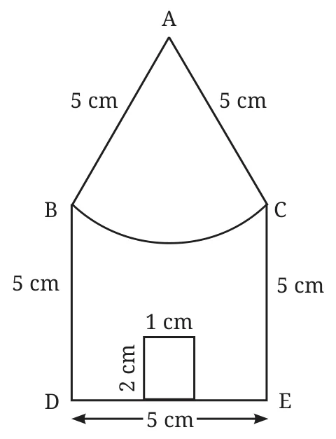
Solution
The first task is to identify in what sequence the lines and curve will have to be drawn.
Step 1
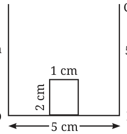
Can you complete the figure? Try! We need to locate the point A that is of distance 5 cm from the points B and C. You might have realised that this can be done using a ruler. However, this leads to a lot of trial and error. This construction can be further simplified. How? If you have guessed that this can be done by the use of compass, you are right! Go ahead and explore how the point A can be located without trial and error. There is a similarity between the problem of finding point A in this problem and point B at step 3 of the second solved example of the previous section (see page 209).
Step 2
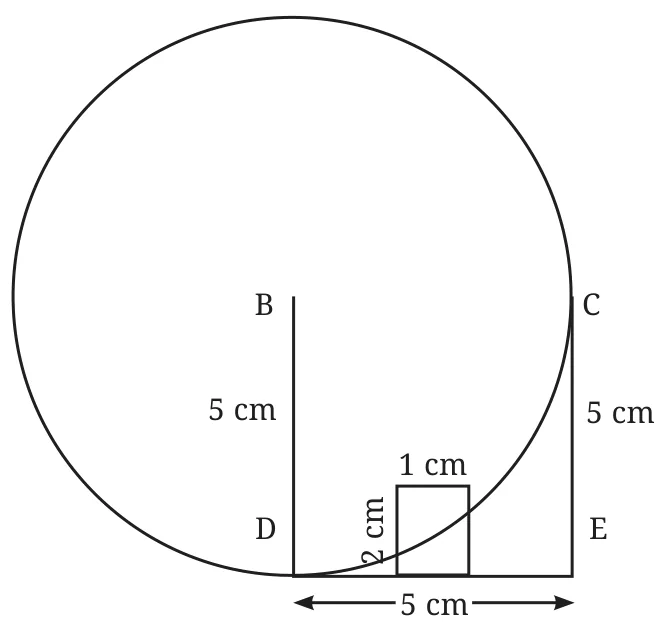
Draw a curve that has all its points of 5 cm from the point B; the circle centred at B should be with 5 cm radius. Does this help in spotting the point A? Construct and explore in the figure. The point A can be located by finding the correct point on the circle that is of distance 5 cm from the point C. Again, this can be done using a ruler. But can we use a compass for this?
Step 3 Method 1
Take a radius of 5 cm in the compass and with C as the centre, draw a circle.
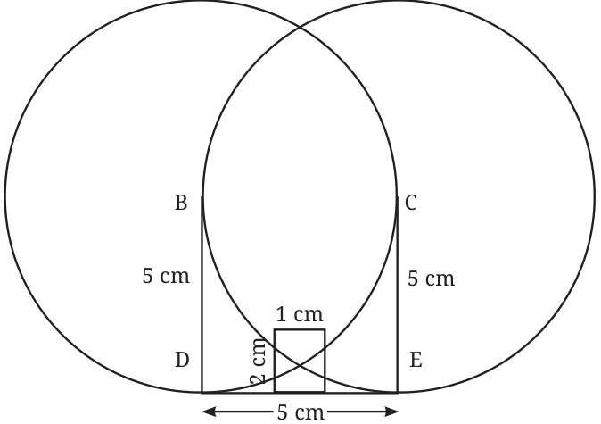
Are you able to spot the point A? Check the figure in your notebook. What do you observe? See the point at which both the circles intersect. How far is it from the point B? How far is it from C? Thus, this is the point A!
Think Was it necessary to draw two full circles to get the point A? We only needed part of both the circles.
Method 2
So the point A could have been obtained just by drawing arcs of radius 5 cm from points B and C.
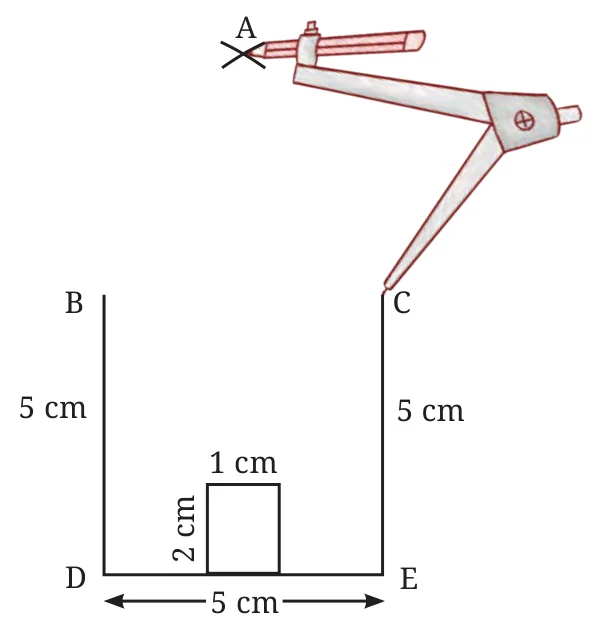
Join A to B and A to C by straight lines.
Having obtained point A, what remains is the construction of the remaining arc. How do we do it? Can we use the fact that A is of distance 5 cm from both B and C?
Step 4
Take 5 cm radius in the compass and from A, draw the arc touching B and C as shown in the figure.
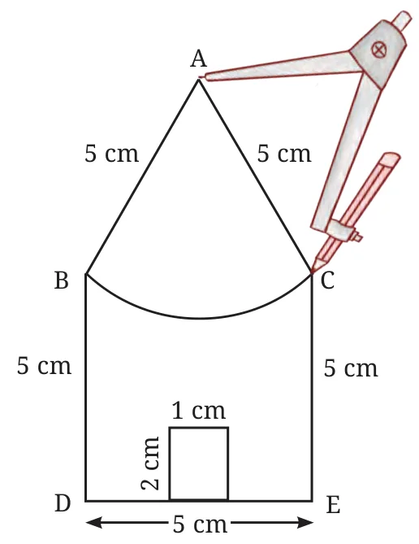
The house is ready!
Construct
- Construct a bigger house in which all the sides are of length 7 cm.
- Try to recreate ‘A Person’, ‘Wavy Wave’, and ‘Eyes’ from the section ‘Artworkʼ, using ideas involved in the ‘House’ construction.
- Is there a 4-sided figure in which all the sides are equal in length but is not a square? If such a figure exists, can you construct it?
Hints
A) Eyes (from 8.1 Artwork and Construct above (page no. 215).
Part of the construction is shown earlier. Observe it carefully. You will see two horizontal lines drawn lightly. In geometric constructions, one often constructs supporting curves or figures that are not part of the given figure but help in constructing it.
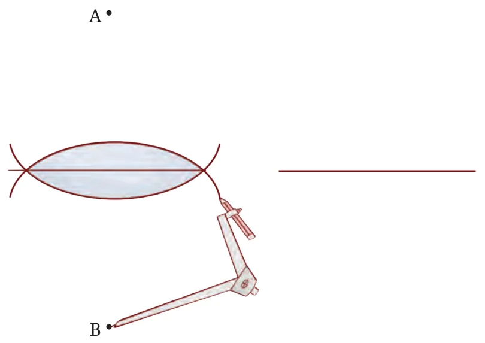
The technique to draw the upper and the lower curves of the eye is the same as that used in the figure, ‘A Personʼ. Points A and B are the locations where the tip of the compass is placed when drawing the curves of the eye. Note that the upper curve and the lower curve should together form a symmetrical figure. For this to happen, where should these points A and B be placed? Make a good estimate.
Try to get the eyes as symmetrical and identical as possible. This might need many trials.
B) (From Construct above (page no. 211). For the purpose of construction, let us take the side lengths to be of 5 cm. Consider this figure.
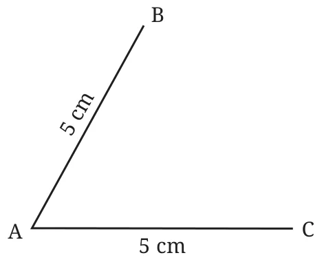
We need to identify only one more point to make this a 4-sided figure. That point, let us call it D, should be 5 cm from both B and C. How can such a point be found?
Can any of the ideas used in the ‘House’ problem be used here?